Présentation de la séquence
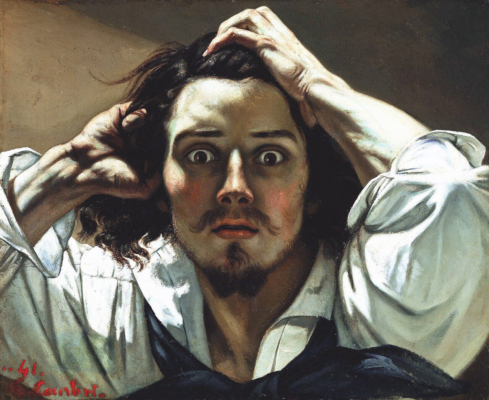
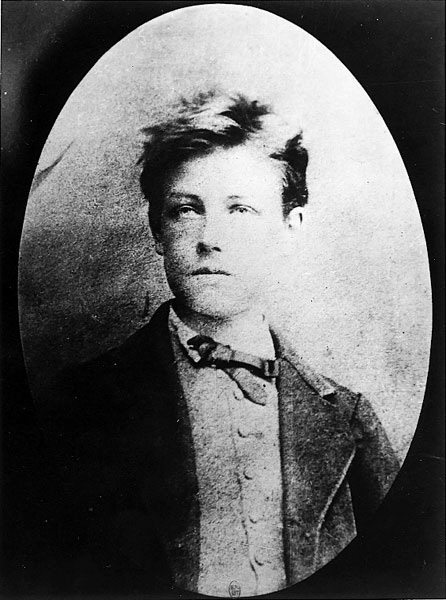
Météo de la classe
Avant de commencer : comment vous sentez-vous face à cette séquence ?
Cadre officiel
Spécialité Humanités, littérature et philosophie, classe de terminale. Programme publié au BO spécial n° 8 du 25 juillet 2019 (arrêté du 17 juillet 2019). Objet d'étude : « La recherche de soi », période du romantisme au XXe siècle. Entrée : « Les métamorphoses du moi ».
L'épreuve écrite dure 4 heures. Elle porte sur un texte et comporte deux questions : une interprétation et un essai, l'une littéraire, l'autre philosophique (l'ordre change selon les sujets).
Problématique
Objectifs
- Lire de près des textes littéraires et philosophiques qui posent la question du moi.
- S'entraîner aux deux exercices du bac : interprétation et essai.
- Acquérir les réflexes utiles pour la suite des études littéraires : citer juste, définir les termes, problématiser, construire un plan dialectique, présenter un exposé oral argumenté.
Déroulé (environ 4 semaines)
| Séance | Titre | Supports | Activité dominante |
|---|---|---|---|
| 1 | Se peindre soi-même | Friedrich, Caravage, Montaigne « Au lecteur » | Lecture d'images, première réflexion |
| 2 | « Moi seul » | Rousseau, Confessions, incipit | Méthode de l'interprétation littéraire |
| 3 | Le moi existe-t-il ? | Descartes, Pascal, Hume | Méthode de l'essai philosophique |
| 4 | « Je est un autre » | Nerval, Rimbaud | Explication de texte poétique |
| 5 | Le double et l'inconscient | Stevenson, Freud, Nietzsche | Débat argumenté |
| 6 | Mémoire et identité | Proust, Locke | Écriture d'invention réflexive |
| 7 | Atelier oral et écrit | Exposé oral, dissertation, lectures | Oral blanc, introduction rédigée |
| 8 | Évaluation sommative | Montaigne, « Du repentir » | Sujet type bac, 4 h |
Version professeur
Organisation conseillée. HLP se fait à deux voix : le professeur de lettres et celui de philosophie travaillent le même texte avec des outils différents. Si vous êtes seule, gardez les deux angles dans chaque séance : une question d'interprétation, une question de réflexion.
Évaluations prévues. Formatives en séances 2, 3 et 6 (corrigées ci-dessous). Oral en séance 7 avec grille. Sommative en séance 8 avec deux grilles sur 10 et éléments de corrigé.
Séance 1 · Se peindre soi-même
1. Regarder deux tableaux
Observez les deux tableaux en silence pendant deux minutes.
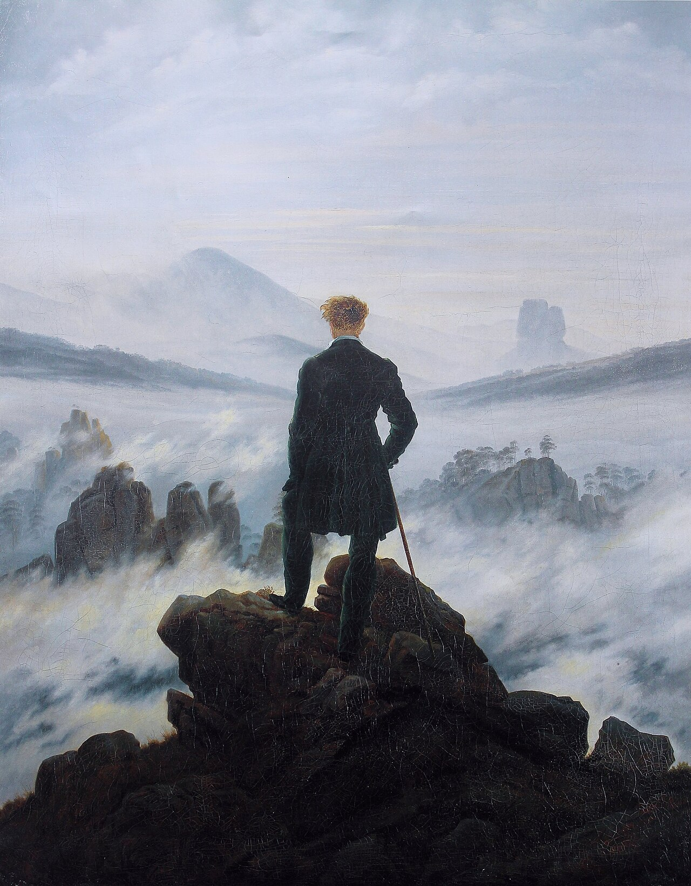
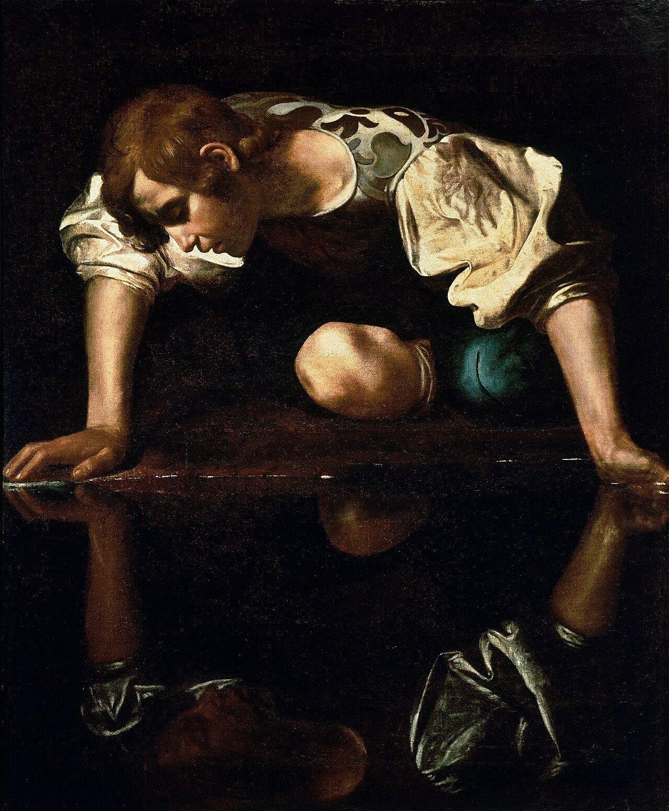
Questions
- Que voit-on du visage de chaque personnage ? Qu'en concluez-vous sur la connaissance de soi ?
- Le premier se cherche dans le monde, le second dans son reflet. Lequel des deux vous semble le plus près de se trouver ?
- Formulez en une phrase la question que ces tableaux posent ensemble.
Version professeur
Pistes. Le voyageur est de dos : nous ne voyons jamais son visage, il reste une énigme pour nous comme peut-être pour lui. C'est l'image romantique du moi qui se projette dans le paysage. Narcisse ne voit que son reflet, et le tableau se referme en cercle sur lui : se contempler n'est pas se connaître, c'est risquer de se perdre (Narcisse meurt).
Question attendue. « Peut-on se voir soi-même ? » ou « Faut-il se regarder pour se connaître ? »
2. Lire Montaigne
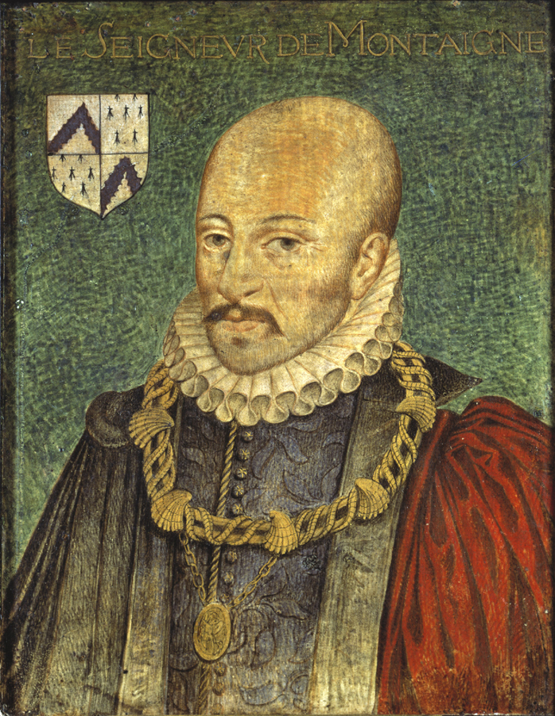
Questions
- Relevez le vocabulaire de la peinture. Pourquoi Montaigne parle-t-il de « peindre » plutôt que d'« écrire » ?
- Que signifie « sans contention et artifice » ? Est-ce possible quand on écrit sur soi ?
- Montaigne est périgourdin, ami de La Boétie. En quoi l'amitié peut-elle aider à se connaître ?
Version professeur
Pistes. « Peindre » insiste sur le portrait fidèle, mais tout portrait est une composition : c'est le paradoxe de l'écriture de soi. « Contention » signifie effort, tension. La sincérité totale est un idéal, pas une évidence. Pour la question 3, on peut rappeler le mot célèbre sur l'amitié (« parce que c'était lui, parce que c'était moi ») : l'autre est un miroir plus fiable que l'eau de Narcisse.
Trace écrite. Le moi devient au XVIe siècle un objet d'écriture. Les romantiques en feront un objet d'exploration, le XXe siècle un objet de soupçon.
La même quête passe par l'autoportrait peint : Rembrandt, toute sa vie, se peint pour se voir changer.
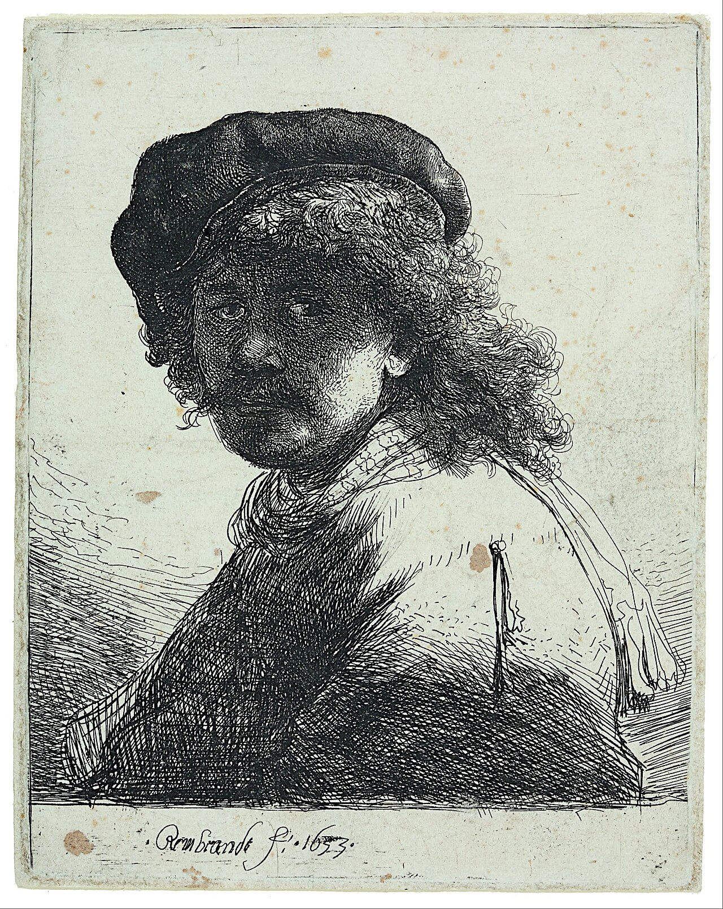
Dans les études de lettres, on vous demandera souvent de situer un texte dans une histoire longue. Prenez l'habitude de noter, pour chaque auteur, sa date et une phrase qui résume sa conception du moi. Vous construirez ainsi votre propre frise.
Séance 2 · « Moi seul » : Rousseau
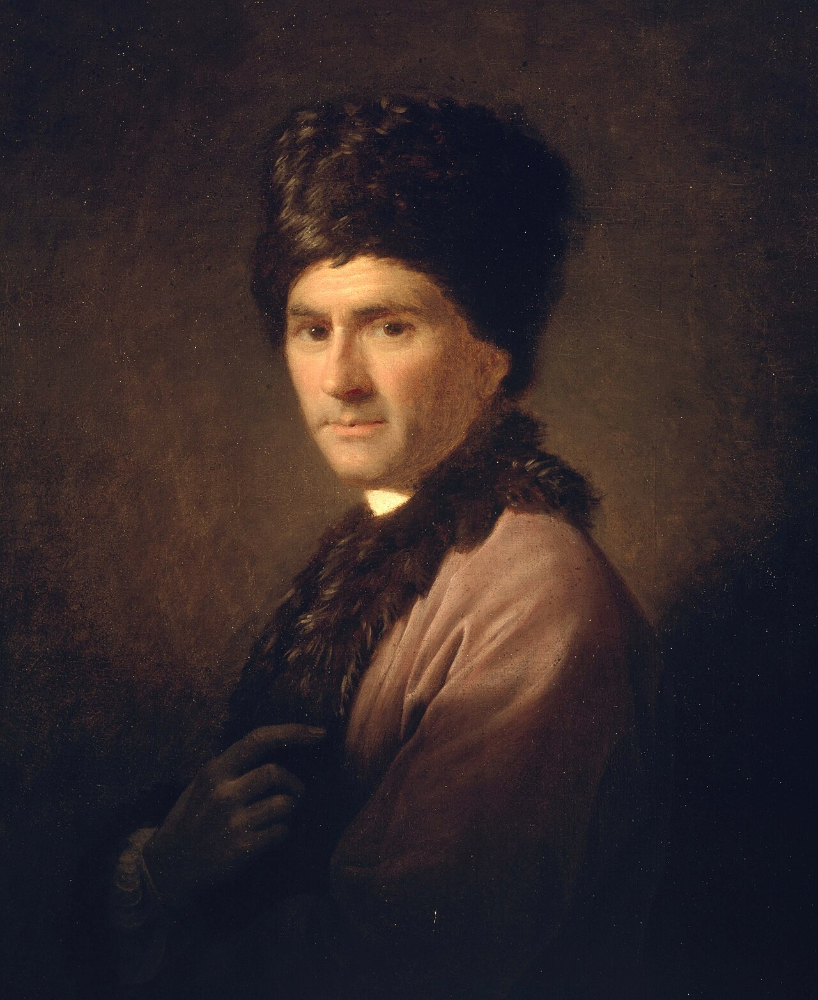
Moi seul. Je sens mon cœur et je connais les hommes. Je ne suis fait comme aucun de ceux que j'ai vus ; j'ose croire n'être fait comme aucun de ceux qui existent. Si je ne vaux pas mieux, au moins je suis autre. Si la nature a bien ou mal fait de briser le moule dans lequel elle m'a jeté, c'est ce dont on ne peut juger qu'après m'avoir lu. Jean-Jacques Rousseau, Les Confessions, livre I, rédigé à partir de 1765, publié en 1782
1. Lecture analytique
- Comptez les pronoms de la première personne. Quel effet produit leur accumulation ?
- Comment Rousseau affirme-t-il à la fois son unicité et sa ressemblance avec les autres hommes ?
- Expliquez l'image du « moule » brisé.
- Comparez avec Montaigne : qu'est-ce qui a changé dans le ton ?
2. Méthode : l'interprétation littéraire
Ce qu'on attend. Une réponse construite à une question précise sur le texte, appuyée sur des citations analysées.
Introduction. Présenter le texte, reformuler la question, annoncer deux ou trois axes.
Développement. Chaque axe : une idée, des citations courtes, une analyse des procédés (énonciation, images, rythme, lexique).
Conclusion. Répondre clairement à la question, ouvrir sur un autre texte.
3. Exercice formatif
Rédigez l'introduction et le premier axe de la réponse à la question : « Comment Rousseau fait-il de sa singularité la justification de son livre ? »
Version professeur
Éléments de corrigé.
Axe 1 : un moi qui se proclame unique. Phrase nominale isolée « Moi seul », effet de détachement. Gradation « aucun de ceux que j'ai vus » puis « aucun de ceux qui existent ». Hyperbole de l'entreprise « qui n'eut jamais d'exemple ».
Axe 2 : un moi offert en exemple. « Mes semblables », « un homme dans toute la vérité de la nature » : le particulier vaut pour l'universel. Paradoxe : l'homme le plus singulier devient le modèle de l'homme naturel.
Axe 3 : un pacte avec le lecteur. Le jugement est différé (« qu'après m'avoir lu ») : le lecteur devient juge, le livre devient un procès.
Barème formatif sur 10. Introduction complète : 3. Axe pertinent : 3. Citations intégrées et analysées : 3. Correction de la langue : 1.
Au bac comme à l'université, une citation ne se « colle » pas : elle s'insère dans votre phrase et elle est suivie d'une analyse. Règle d'or : une citation, un procédé, un effet.
Séance 3 · Le moi existe-t-il ?
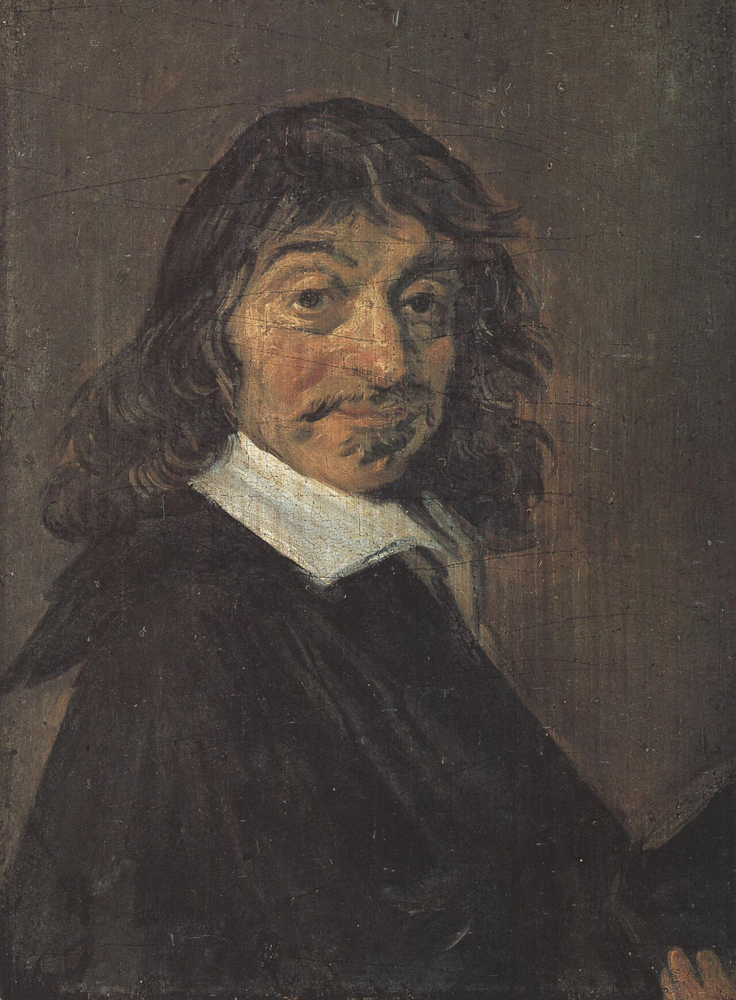
Texte A
Texte B
Texte C
1. Comprendre
- Pour Descartes, qu'est-ce qui est certain ? À quelle condition ?
- Pascal cherche le moi dans le corps puis dans les qualités de l'âme. Que trouve-t-il ?
- Hume cherche le moi et ne trouve que des perceptions. Qu'en conclut-il, selon vous ?
- Classez ces trois positions : le moi est une substance, une énigme, une illusion.
2. Méthode : l'essai philosophique
Analyser le sujet. Définir chaque terme, repérer le présupposé, formuler le problème (une tension entre deux réponses possibles).
Construire. Un plan en deux ou trois parties qui avance : chaque partie répond aux limites de la précédente.
Nourrir. Des références précises (auteurs, œuvres, exemples tirés de la vie ou des arts), toujours expliquées.
3. Exercice formatif
Sujet : « Suis-je ce que je pense être ? » Rédigez l'analyse du sujet, la problématique et le plan détaillé.
Version professeur
Réponses aux questions. 1. Mon existence comme chose pensante, tant que je pense. 2. Que le moi est insaisissable : on n'aime que des qualités empruntées. 3. Que le moi n'est qu'un « faisceau » de perceptions sans substance stable. 4. Substance : Descartes. Énigme : Pascal. Illusion ou fiction : Hume.
Corrigé possible de l'exercice.
Problème. Penser être quelque chose semble suffire à l'être (Descartes), mais ce que je pense de moi peut être une image fausse ou flatteuse.
I. La conscience me donne un accès privilégié à moi-même : je suis une chose qui pense.
II. Mais cette conscience est trompeuse : préjugés, amour-propre (Pascal), absence d'un moi stable (Hume), inconscient (séance 5).
III. Je deviens moi en me racontant et en agissant : l'identité est une tâche plutôt qu'un donné (on pourra évoquer Ricœur et l'identité narrative).
Barème formatif sur 10. Définitions : 2. Problématique claire : 3. Plan progressif : 3. Références pertinentes : 2.
Une bonne « définition » n'est jamais celle du dictionnaire seule. On distingue les sens du mot. Exemple : « moi » désigne le sujet qui dit je, la personnalité, l'image sociale, l'instance psychique chez Freud.
Séance 4 · « Je est un autre »
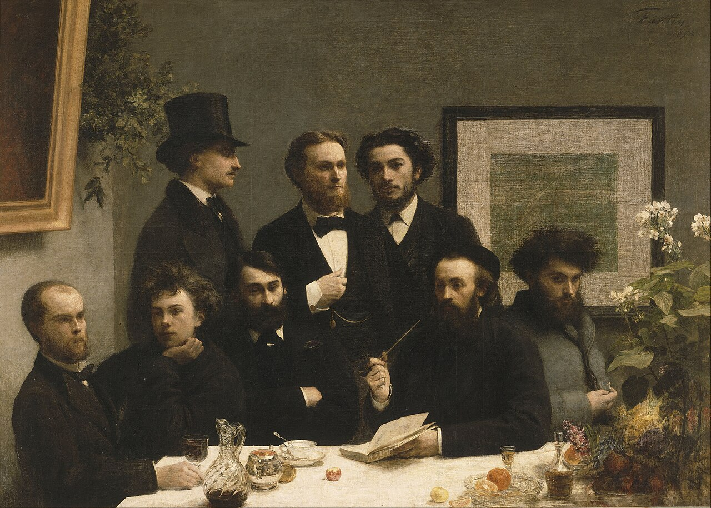
Texte A
Le Prince d'Aquitaine à la Tour abolie :
Ma seule Étoile est morte, et mon luth constellé
Porte le Soleil noir de la Mélancolie. Gérard de Nerval, « El Desdichado », Les Chimères, 1854, premier quatrain (ponctuation simplifiée)
Texte B
1. Questions
- Nerval : relevez les identités successives que s'attribue le « je ». Sont-elles compatibles ?
- Expliquez l'oxymore « Soleil noir ».
- Rimbaud : pourquoi la faute grammaticale « Je est » est-elle volontaire ? Que dit-elle ?
- Comparez avec Rousseau : le moi est-il encore « seul » ?
Version professeur
Pistes. Nerval multiplie les masques (veuf, prince, figure mythique) : le moi est fait de rôles et de souvenirs, il se fragmente. L'oxymore dit la mélancolie comme lumière inversée, source de création. Chez Rimbaud, « Je » traité à la troisième personne devient un objet : le poète ne choisit pas ce qu'il est, comme le cuivre ne choisit pas de devenir clairon. Rousseau voulait se montrer « tout entier » ; Nerval et Rimbaud découvrent un moi pluriel et étranger à lui-même.
Prolongement possible. Pour la lecture à voix haute, faire travailler la diction du quatrain de Nerval (rythme 6/6, coupes).
2. Atelier d'écriture
À la manière de Nerval, écrivez quatre vers (ou quatre lignes de prose poétique) commençant par « Je suis », dans lesquels vous vous attribuez au moins trois identités différentes.
Lire la lettre du Voyant en entier (quelques pages) est un excellent exercice pour l'été avant les études supérieures. Notez les passages qui vous résistent : ce sont souvent ceux qui feront un bon sujet d'oral.
Séance 5 · Le double et l'inconscient
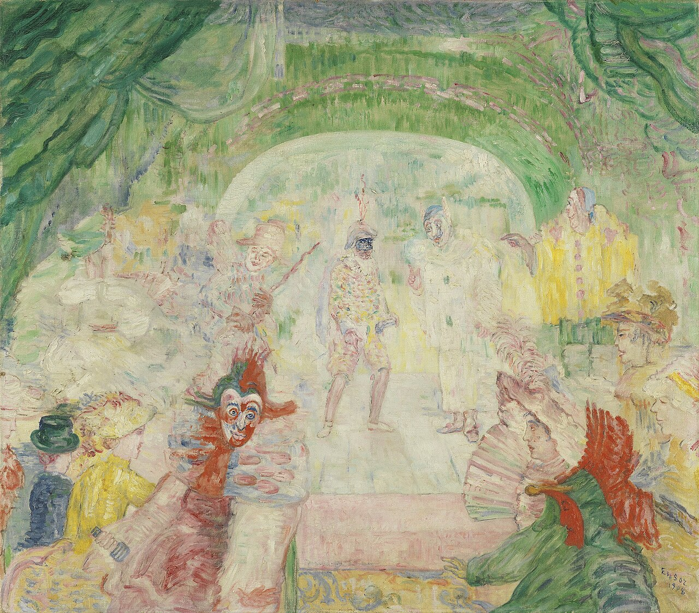
Texte A
Traduction de travail : j'appris à reconnaître la dualité profonde et primitive de l'homme ; l'homme n'est pas véritablement un, mais véritablement deux.
Texte B
Dans un article de 1917, Freud explique que l'humanité a subi trois blessures d'amour-propre. Copernic a montré que la Terre n'est pas le centre de l'univers. Darwin a montré que l'homme descend de l'animal. La psychanalyse montre que le moi n'est pas maître dans sa propre maison : une grande part de notre vie psychique nous échappe.
Sigmund Freud, « Une difficulté de la psychanalyse », 1917 (résumé)
Texte C
Nietzsche, dans Par-delà bien et mal (1886, § 17), remarque qu'une pensée vient quand « elle » veut, et non quand « je » veux. Dire « je pense » serait une habitude de grammaire plutôt qu'une certitude.
1. Débat argumenté
Question : « Sommes-nous responsables de ce que nous ne connaissons pas en nous ? »
La classe se partage en deux groupes. Chaque groupe prépare trois arguments et un exemple tiré d'une œuvre (roman, film, série, tableau). Deux élèves observateurs notent les meilleurs arguments.
Version professeur
Arguments attendus.
Non. Si le moi n'est pas maître chez lui (Freud), si la pensée vient « quand elle veut » (Nietzsche), alors certaines actions nous échappent. Jekyll lui-même dit que Hyde n'est pas lui.
Oui. Jekyll a choisi de boire la potion : il a libéré ce qu'il connaissait déjà. Reconnaître l'inconscient n'efface pas la responsabilité, cela oblige à se connaître davantage (c'est le but même de la cure analytique).
Lien Descartes. Revenir à la séance 3 : la transparence du cogito est mise en doute.
Le travail sur un texte en langue étrangère est un atout pour la suite (langues, littérature comparée). Lisez quelques pages de Stevenson en anglais : la langue est accessible et le récit très court.
Séance 6 · Mémoire et identité
Repère philosophique
John Locke (Essai sur l'entendement humain, 1690, II, 27) propose une thèse simple : une personne reste la même tant que sa conscience peut rejoindre, par la mémoire, ses pensées et ses actions passées. Mon identité s'étend aussi loin que ma mémoire.
1. Questions
- Le souvenir de Proust est-il volontaire ? Qu'est-ce qui le déclenche ?
- Que retrouve le narrateur en même temps que le souvenir ?
- Si l'identité tient à la mémoire (Locke), que devient une personne qui oublie ?
2. Exercice formatif : écriture réflexive
En une page, racontez un souvenir déclenché par une sensation (odeur, goût, musique), puis expliquez en un paragraphe ce que ce souvenir vous apprend sur la personne que vous étiez et celle que vous êtes devenue.
Version professeur
Réponses. 1. Non : c'est la mémoire involontaire, déclenchée par une sensation. 2. Tout un monde (Combray) et un moi ancien qu'il croyait perdu. 3. Discussion : la thèse de Locke rend l'identité fragile (maladie, oubli). On peut objecter que les autres, le corps, les récits gardent aussi notre identité.
Grille sur 10. Récit précis et sensoriel : 3. Passage du récit à la réflexion : 3. Lien explicite avec Proust ou Locke : 2. Langue : 2.
Proust est un auteur que l'on croise partout dans les études de lettres. Commencez par Combray (première partie de Du côté de chez Swann) : c'est l'entrée la plus douce dans À la recherche du temps perdu.
Séance 7 · Atelier oral et écrit
1. L'exposé oral
Principe. Un sujet tiré au sort, un temps de préparation, un exposé devant le professeur, puis un échange. C'est aussi un bon entraînement pour le Grand oral.
Format en classe. 30 minutes de préparation, 10 minutes d'exposé, 5 minutes de questions.
Sujets au choix (tirage au sort)
- « Je est un autre. » Commentez cette formule de Rimbaud.
- Peut-on être sincère quand on parle de soi ?
- Changer, est-ce se trahir ?
- Le moi est-il haïssable ?
Version professeur
Grille de l'exposé oral sur 20.
| Critère | Points |
|---|---|
| Introduction : sujet défini, problème posé, plan annoncé | 4 |
| Progression logique de l'exposé | 5 |
| Références précises et expliquées | 4 |
| Expression orale : voix, regard, gestion du temps, détachement des notes | 4 |
| Réactivité lors de l'échange | 3 |
2. Rédiger une introduction de dissertation
Les cinq temps. Une accroche (citation, exemple, situation). Le sujet cité. L'analyse des termes. La problématique. L'annonce du plan.
Rédigez l'introduction complète du sujet n° 3 : « Changer, est-ce se trahir ? »
Version professeur
Proposition de corrigé.
Dans les Essais, Montaigne avoue qu'il ne peint pas « l'être » mais « le passage ». Il fait du changement la vérité même de son portrait. On reproche pourtant volontiers à quelqu'un d'avoir « changé », comme s'il avait renié ce qu'il était. Changer, est-ce alors se trahir ? Changer, c'est devenir autre dans ses idées, ses goûts, son caractère ; se trahir, c'est être infidèle à soi, comme à une parole donnée. La question suppose qu'il existe un moi premier auquel on devrait rester fidèle. Mais si le moi n'est jamais fixe, à qui serait-on infidèle ? Nous verrons d'abord que le changement peut menacer l'identité, puis que le moi se construit au contraire dans ses métamorphoses, avant de montrer que la fidélité à soi est moins une immobilité qu'une promesse tenue.
3. Lectures conseillées pour l'été
| Œuvre | Pourquoi la lire |
|---|---|
| Montaigne, Essais, livre III (choix de chapitres) | La source de toute écriture de soi |
| Rousseau, Les Rêveries du promeneur solitaire | Court, beau, au programme de nombreux concours |
| Stendhal, Le Rouge et le Noir | Un moi qui se fabrique par ambition |
| Baudelaire, Les Fleurs du mal | Le spleen, la mélancolie, la modernité |
| Stevenson, Jekyll and Hyde | Court, en anglais ou en français |
| Proust, Combray | La mémoire involontaire |
| Sartre, Les Mots | Une autobiographie qui démonte le mythe de l'enfance |
| Annie Ernaux, Les Années | Un moi raconté à travers une époque |
Tenez un carnet de lectures : pour chaque œuvre, l'auteur, la date, trois citations courtes et une idée. C'est ce carnet, plus qu'un manuel, qui vous servira dans vos études.
Séance 8 · Évaluation sommative (type bac, 4 heures)
Lexique : « je le récite » : je le raconte · « meshui » : désormais · « ne fourvoient point » : ne s'égarent pas · « branloire pérenne » : balançoire perpétuelle, mouvement sans fin · « assurer » : fixer.
Question 1 · Interprétation littéraire (10 points)
Comment Montaigne fait-il de l'instabilité du moi la matière même de son écriture ?
Question 2 · Essai philosophique (10 points)
Changer, est-ce cesser d'être soi ?
Vous vous appuierez sur le texte, sur les lectures de la séquence et sur votre culture personnelle.
Version professeur
Éléments de corrigé · Question 1
Axe 1 : un monde et un moi en mouvement. Champ lexical du mouvement (« branloire », « branlent », « branle », « chancelant », « passage »). Énumération des choses en apparence immobiles (rochers du Caucase, pyramides) : rien n'échappe au changement. Paradoxe : « la constance même » n'est qu'un mouvement ralenti.
Axe 2 : un portrait fidèle parce que mobile. Opposition « Les autres forment / je le récite » : Montaigne refuse de donner un modèle, il décrit. « Les traits de ma peinture ne fourvoient point » : la vérité du portrait tient à ce qu'il suit les variations. Antithèse finale « l'être / le passage », phrases brèves, rythme qui s'accélère (« de jour en jour, de minute en minute »).
Axe 3 : une écriture de l'instant. « En l'instant que je m'amuse à lui » : écrire, c'est saisir le moi au présent. « Accommoder mon histoire à l'heure » : la forme de l'essai (essayer, reprendre, corriger) épouse l'objet.
Éléments de corrigé · Question 2
Problème. Être soi semble supposer une permanence ; or tout change en moi (Montaigne, Hume). Si changer était cesser d'être soi, personne ne serait jamais soi.
I. Le changement menace l'identité. Être le même, c'est demeurer. Exemples : la maladie, l'oubli (Locke), Jekyll qui devient Hyde.
II. Mais le moi n'est pas une chose fixe. Hume : un flux de perceptions. Montaigne : peindre le passage. Rimbaud : « Je est un autre ». Changer est la condition même de la vie du moi.
III. Rester soi en changeant. Le récit de soi relie les moments (Proust, identité narrative chez Ricœur). La fidélité à une promesse ou à des valeurs fait l'identité morale. On peut changer pour devenir davantage soi (émancipation, éducation).
Grille · Question 1 (interprétation littéraire, sur 10)
| Critère | Points |
|---|---|
| Compréhension du texte et de la question | 2 |
| Construction de la réponse (introduction, axes, conclusion) | 2 |
| Analyse précise des procédés, citations intégrées | 4 |
| Mise en perspective (autres textes de la séquence) | 1 |
| Qualité de la langue | 1 |
Grille · Question 2 (essai philosophique, sur 10)
| Critère | Points |
|---|---|
| Analyse des termes et problématique | 2 |
| Progression argumentative | 3 |
| Références philosophiques et littéraires expliquées | 2 |
| Exemples pertinents et usage du texte | 2 |
| Qualité de la langue | 1 |
Ressources
Œuvres de la séquence (déjà affichées dans les séances)
Friedrich et Narcisse (séance 1) · Montaigne et Rembrandt (séance 1) · Rousseau (séance 2) · Descartes (séance 3) · Fantin-Latour (séance 4) · Ensor (séance 5) · Courbet et Rimbaud (ouverture).
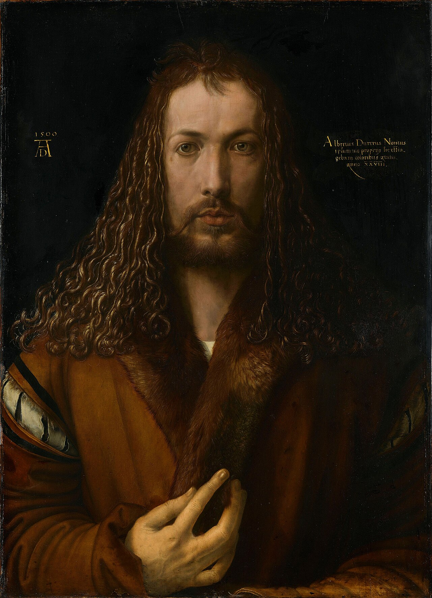
Vidéos (recherches prêtes)
- Montaigne, « Je peins le passage »
- Rimbaud, la lettre du Voyant
- HLP terminale, les métamorphoses du moi
- Réussir un exposé oral